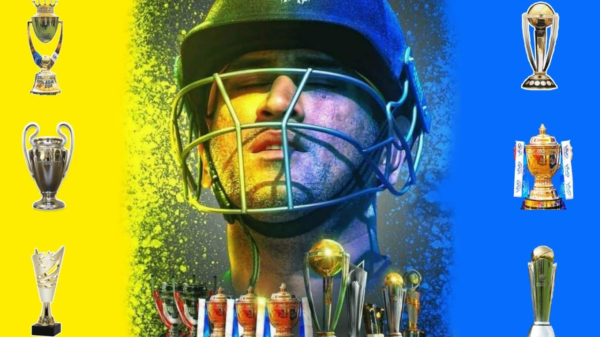

Captain Cool, the legend, the one and only. He led India to victory, And brought joy to millions. Dhoni, the
wicket-keeper, the batsman, the captain, A true legend of Indian cricket. He made us proud, And will always be remembered.
Here's the key moments in MS Dhoni Life Journey:
Early life: Born in Ranchi, Jharkhand, India, on July 7, 1981, Mahendra Singh Dhoni was the son of Pan Singh, a former regional level volleyball player, and Devaki Devi, a homemaker. He studied at DAV Jawahar Vidya Mandir, Shyamali, Ranchi, and went on to study graduation in commerce at St. Xavier's College, Ranchi.
Domestic career: Dhoni made his first-class debut for Bihar in 1999-2000, and his List A debut for East Zone in the 2000-01 Deodhar Trophy. He was selected for the India A team in 2003-04, and made his ODI debut against Bangladesh in December 2004.
International career: Dhoni made his Test debut against Sri Lanka in December 2005, and became the youngest Indian captain to lead the team in Test cricket in 2007. He led India to victory in the 2007 ICC World Twenty20, and the 2011 ICC Cricket World Cup. He retired from international cricket in 2019.
Captaincy: Dhoni was a successful captain, leading India to victory in the 2007 ICC World Twenty20, the 2011 ICC Cricket World Cup, and the 2013 ICC Champions Trophy. He is the only captain to have won all three major ICC trophies.
Records: Dhoni holds a number of batting and wicket-keeping records, including the most runs scored by an Indian wicket-keeper in ODI cricket, and the most dismissals by an Indian wicket-keeper in ODI and Test cricket. He is also the only wicket-keeper to have scored a century in all three formats of international cricket.
Awards and honors: Dhoni has been awarded the Padma Bhushan, India's third-highest civilian award, in 2018. He has also been awarded the Arjuna Award, the Khel Ratna Award, and the ICC ODI Cricketer of the Year award.
Post-retirement career: Dhoni has played for the Chennai Super Kings in the Indian Premier League since 2008, and has captained the team to three titles. He is also the owner of the Ranchi Rays franchise in the Pro Kabaddi League.